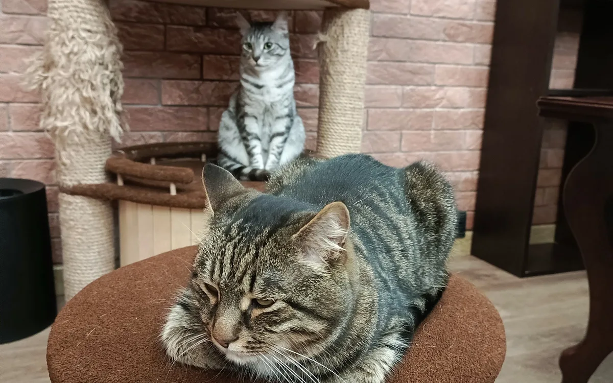
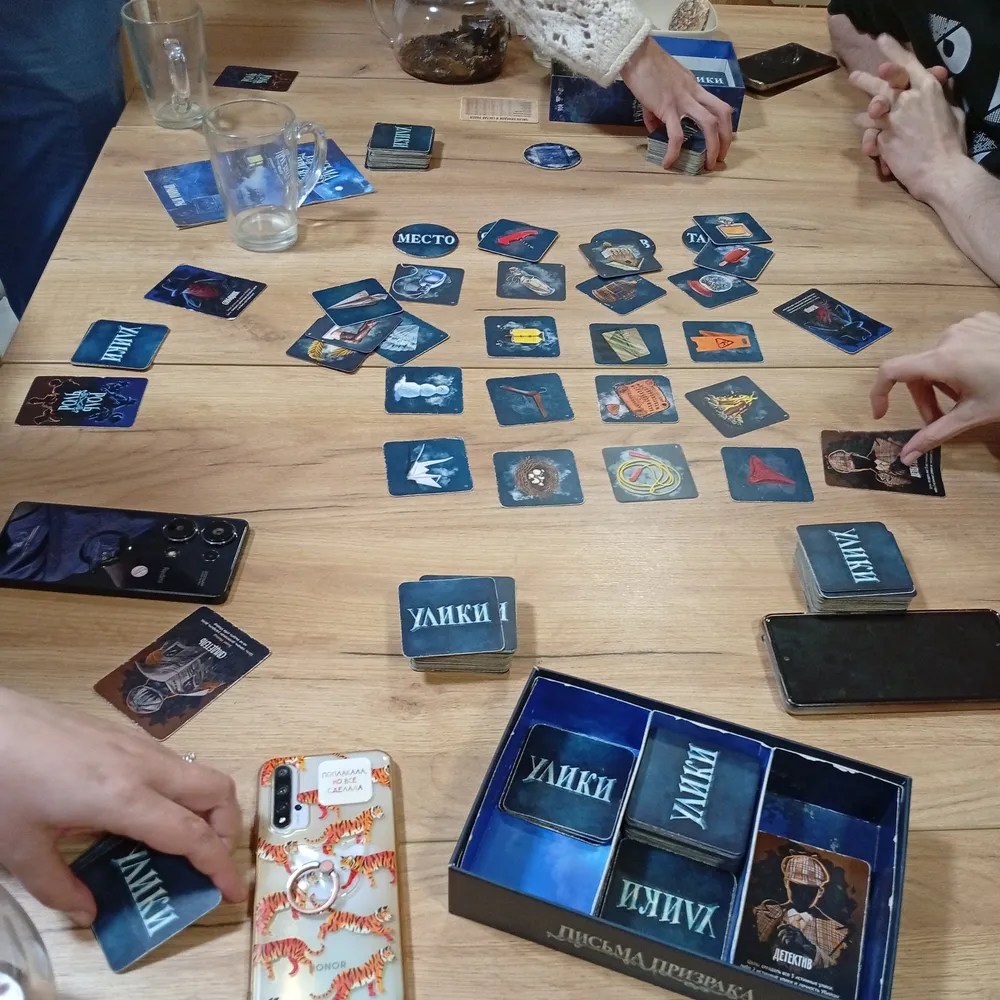
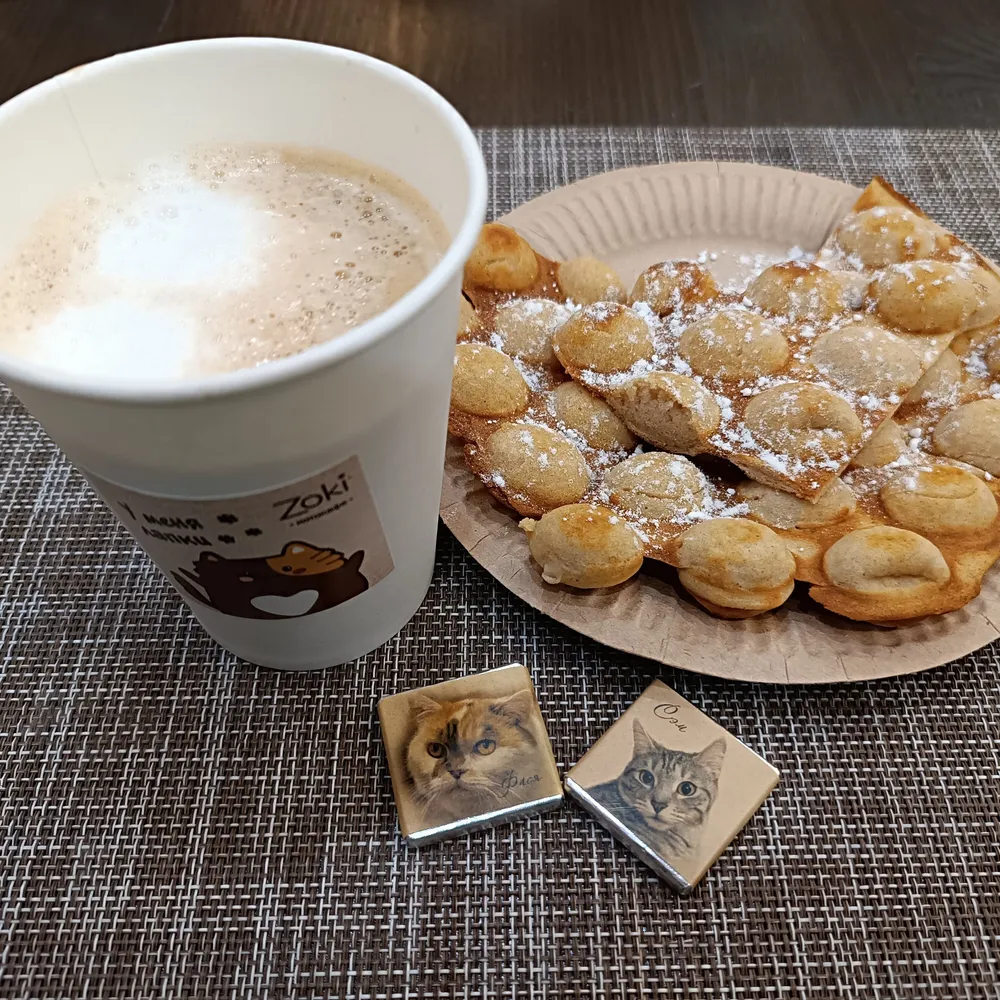
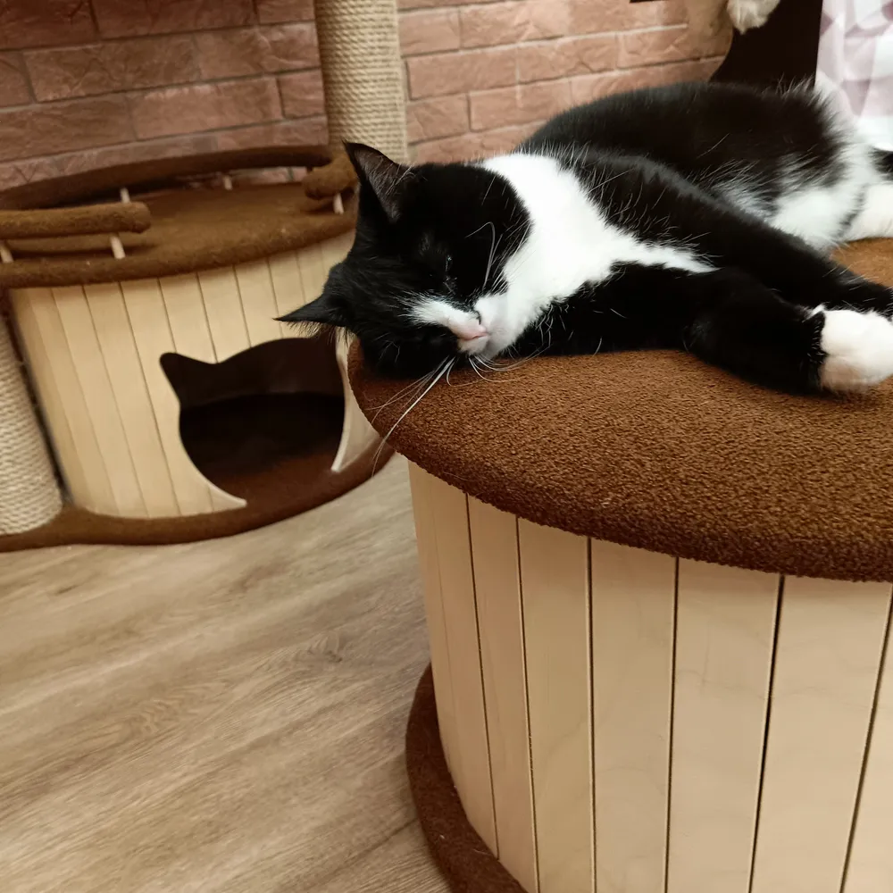

Котокафе Zoki · Йошкар-Ола
Корпоратив в котокафе в Йошкар-Оле: зал только для вашей команды
Закрытый формат: весь зал с настольными играми, книгами и приставкой на время вашего праздника принадлежит только вашей компании и котикам.
- Закрытый формат: котокафе только для вашей компании
- Настольные игры, приставка и книги для команды
- Кофе, вафли и десерты прямо в зале

Что получает ваша команда в котокафе Zoki
Что входит в корпоратив
- Весь зал котокафе без посторонних гостей
- Настольные игры, игровая приставка, книги и Wi-Fi
- Знакомство с котиками и правилами кафе от администратора
Что можно добавить
- Квиз, квест-бродилки, мастер-класс
- Кофе, вафли и десерты по меню
- Фотозона, подарочные сертификаты и мерч
Сколько стоит корпоратив в котокафе в Йошкар-Оле
Закрытый формат считаем за час. Программу, угощение и подарки обсуждаем под вашу команду.
Котокафе для вашей компании
- Закрытый корпоративвесь зал только для вашей компании, без посторонних гостей2 500 ₽ за час
- Командная встреча в обычные часыбудни без ограничения времени, выходные и праздники 1,5 часа340 ₽ / 390 ₽ с человека
Программа и угощение
- Квиз и игры для командымяу-квиз, музыкальный квиз, квест-бродилки, настольные игрыуточнить
- Мастер-классделаете своими руками брелок «Кот» или значокуточнить
- Кофе, вафли и десертызаказываете из меню кафе прямо в залепо меню
- Фотозонадля общих кадров командыуточнить
Подарки
- Подарочный сертификат и мерчсертификат в котокафе, кружки, футболки, стикеры, календари с котикамиуточнить
Цену на вашу дату, число гостей и программу называем по телефону: +7 (8362) 35-35-10.
Как организовать корпоратив в Zoki
- 01
Позвоните или напишите в MAX
Назовите дату, время и сколько будет человек: +7 (8362) 35-35-10.
- 02
Выберите формат
Закрытый зал на нужные часы или встреча команды в обычное время кафе.
- 03
Подберите программу
Квиз, настольные игры, мастер-класс, угощение из меню. Берёте только то, что нужно.
- 04
Приходите всей командой
Первомайская, 114, у входа в центральный парк. Остальное берём на себя.
Фото котокафе Zoki в Йошкар-Оле: настольные игры, кофе, котики



Чем запоминается корпоратив в Zoki
Зал только для вашей команды
В закрытом формате никто посторонний не заходит: свой стол, свои игры, свои котики на коленях.
Есть чем заняться между разговорами
Настольные игры, приставка, книги и Wi-Fi: можно играть, болтать или просто отдыхать с котиком.
Корпоратив с добрым смыслом
Zoki - социальный проект: мы помогаем бездомным кошкам найти дом, а ваша команда проводит время рядом с ними.
Знакомим с каждым котиком
Администратор расскажет про правила кафе и про каждого обитателя: как зовут, сколько лет и какой характер.
Отзывы о котокафе Zoki
«Очень хорошее кафе! Котики безумно милые, ласковые и приветливые. В комнате с котами всегда чисто, приятно пахнет и приятная атмосфера) Большой выбор настольных игр и книг позволяет провести время еще интереснее!»
Анна · 27 ноября 2025
«Сегодня побывала там с подружками. Там 14 разных кошек с классными именами, со всеми ими мы поиграли. Там ещё и книги есть, настольные игры, плэй-стейшн и кафе. В общем, можно перекусить и здорово провести время с друзьями да и отдохнуть можно»
Yana Petrova · 13 января
«Прекрасное место. Девушки-администраторы молодцы, все подробно рассказали и про концепцию кафе, и про каждого котика в отдельности. Меню небольшое, но те блюда, что мы заказали были вкусными.»
Александра Олькина · 9 января
Отзывы с карточки на Яндекс.Картах, без правок.
Частые вопросы о корпоративе в котокафе
Проводите ли вы корпоративы?
Да. Можно закрыть котокафе под вашу компанию или прийти командой в обычные часы. Дату, число гостей и программу обсудим по телефону.
Сколько стоит корпоратив в котокафе?
Закрытый формат считаем за час, 2 500 ₽ за весь зал. Вход в обычные часы стоит 340 ₽ в будни без ограничения времени и 390 ₽ в выходные на 1,5 часа. Программу и угощение обсуждаем отдельно.
Что есть в зале для команды?
Настольные игры, игровые приставки, книги, Wi-Fi, можно работать с ноутбуком. Из еды - кофе, вафли, блинчики, сырники и десерты.
Какие программы можно заказать?
Мяу-квиз, музыкальный квиз, квест-бродилки, настольные игры и мастер-классы по изготовлению брелока «Кот» и значка.
Можно ли подарить коллегам котокафе?
Да, у нас есть подарочные сертификаты и мерч с котиками: кружки, футболки, стикеры и календари.
Когда вы работаете и как вас найти?
Ежедневно с 10:00 до 21:00, котики ложатся спать в 20:30. Адрес: Йошкар-Ола, Первомайская улица, 114, напротив входа в центральный парк. С животными приходить нельзя.
Назовите дату и число гостей - подберём формат
- Адрес
- Первомайская ул., 114, Йошкар-Ола
- Часы
- Ежедневно 10:00-21:00, котики ложатся спать в 20:30
- Телефон
- +7 (8362) 35-35-10